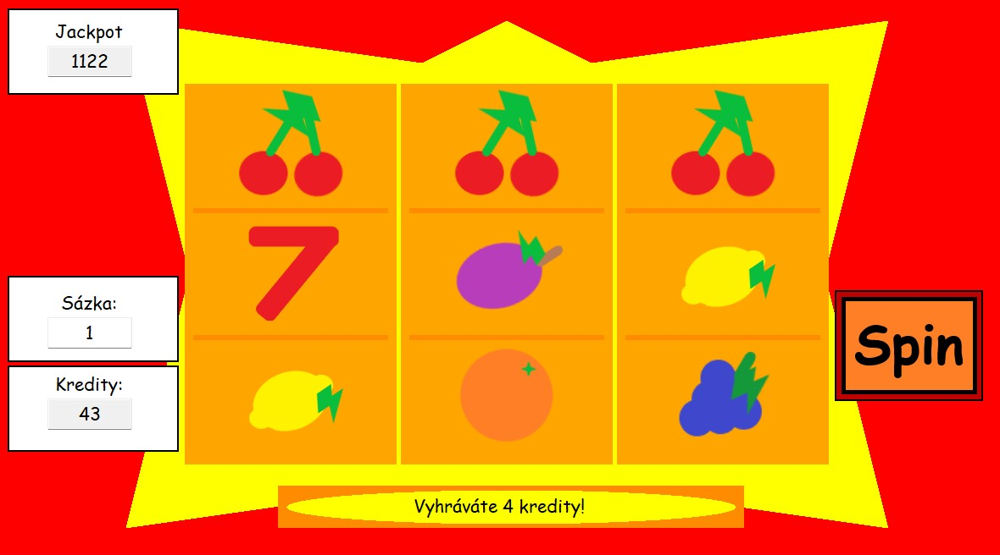

Slot Machine

This was my project in Programming in High School. The project's implemented in C# and .NET as a windows application. It features 5 winning lanes, 10 symbols with different odds and payout values, and a time-based Jackpot system.